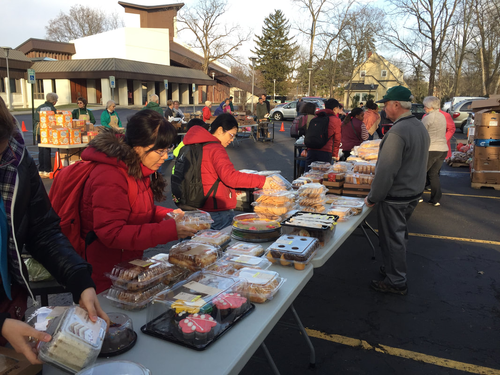
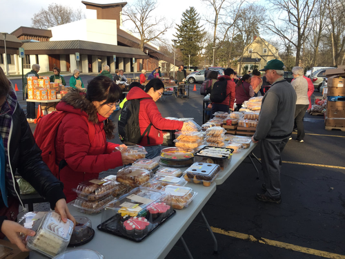
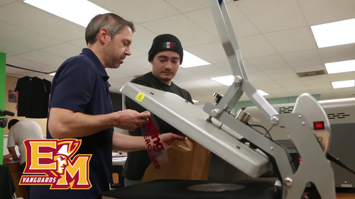
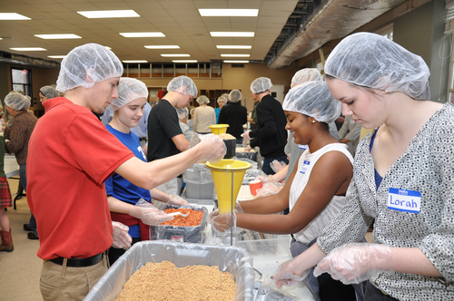
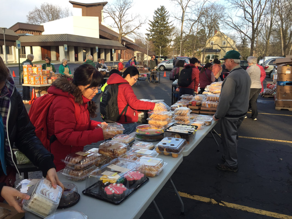
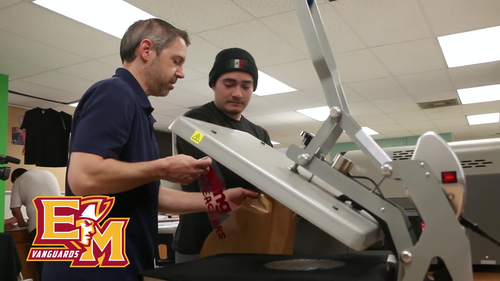
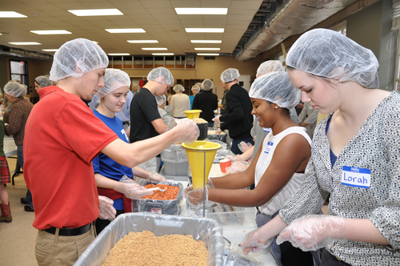

Ruben Bejar
In high school, I was in a marketing team called the Digital Marketing Collaborative. We created banners, posters, stickers, shirts, and hats in the class. We also made designs on metal bottles, glass bottles, wood plaques, and glass plaques. Each of us in the class would be divided into groups to do different jobs. One would be in charge of printing the design on shirts and then ironing them. One would be in charge of engraving the bottles and plaques on the laser engraver. Then the last would be printing the banners, posters, and stickers on a huge printer and loading in the material needed to print. From the start of my senior year till graduation, I have been doing every job in the classroom, and we have been giving those materials to different schools, including ours.
I volunteered once for community service to do a food packaging event for people in need. Many people also volunteered, including my classmates, and our goal was to get at least 5,000 packaged food by the end of the day. When the event was about to start, the people in charge assigned each of us to different positions where one would measure the amount of food to put in the bag, then the other group would seal the bag, and lastly, the other group would put the packaged food in boxes then tape it up. The team I was assigned to was measuring the food, as I went to my team and prepared myself with the materials, the event began. For hours I measured the food and put it inside the bag then, at 12 p.m., the people in charge told us that we had reached 1,000 packaged food, and we continued our job. Around 5 p.m., we already hit 3,000, then at 9:00 p.m., we hit our goal of 5,000.
I also volunteered at church for at least more than 5 years. Each week on a Sunday, whenever we would be selling food, each family who volunteered would bring food of their own or buy from restaurants. When the mass was finished, people went outside and bought food from us, the only thing I was in charge of was getting the money and giving the customers their change back and also giving them their drinks. The same thing happens each week when we sell, and I just get the money from the customers. Although when I was working, It gave me an understanding of what it was like to work in the workplace as well as working with another person.
Experience
volunteer
• Help a church sell food to get money
• Worked with other people to give food to customers
• Multitasked with getting food and money
Food packager
• Packaged food for people
• Reached goal for packaging 5,0000 food
Student
• Made T-shirts, bottles, banners and posters
• Handle with a laser engraver, shirt printer, and banner printer
• Created over hundreds of products for schools
• Received money for our school
Education
UC Riverside
El Modena High School
Portfolio
 



 